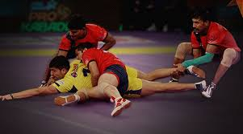
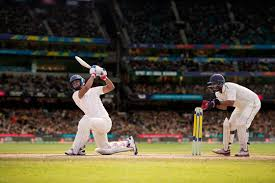
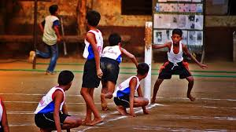
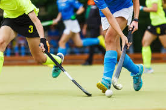
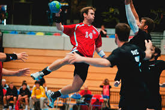
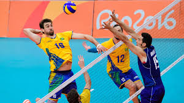
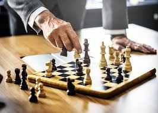
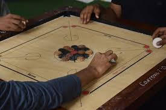

Kabaddi is a contact team sport that originated in ancient India. It involves two teams of seven players each, with the objective of scoring points by raiding the opposing team's half of the court and tagging or wrestling defenders while holding one's breath and chanting "Kabaddi".
Cricket is a bat-and-ball game played between two teams of eleven players
Football, also known as soccer, is a team sport played with a spherical ball between two teams of eleven players
Kho kho is a traditional Indian sport, one of the oldest tag games, known for its speed, agility, and strategic gameplay
Hockey, a fast-paced sport, involves two teams of 11 players each vying to score by hitting a ball into the opposing team's net using a stick
Kho kho is a traditional Indian sport, one of the oldest tag games, known for its speed, agility, and strategic gameplay
Volleyball is a team sport where two teams of six players compete to score points by grounding a ball on the opponent's court within organized rules
Tennis is a racket sport played between two players (singles) or two teams of two players (doubles)
Chess is a two-player strategy board game played on an 8x8 checkered board.
How to Play Carrom for Beginners: 13 Steps (with Pictures)Carrom is a popular indoor tabletop game originating from the Indian subcontinent, played with a striker disc and smaller carrom men (coins) on a square board with pockets.
